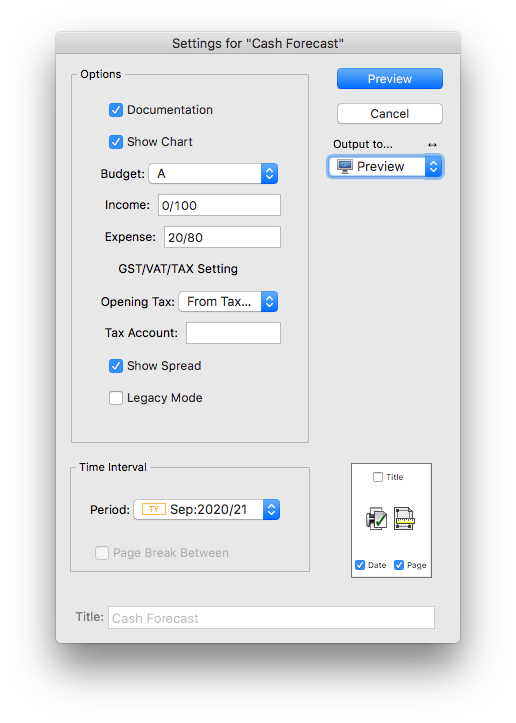
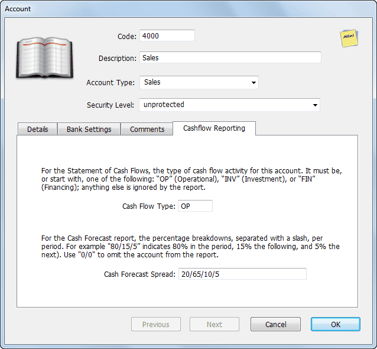

MoneyWorks Manual
Cash Forecast Report
The Cash Forecast report provides a 15 month cash forecast (in local currency), and is the sort of report your bank manager would like to see. It is calculated by spreading the budget figures (in either the A or B budget) across up to five subsequent periods based on a specified “spread”. Default spreads can be specified for inwards and outwards items, and these can be overridden for individual general ledger accounts.

The accrual budget is converted to an estimated cash budget by spreading it over the accrued and subsequent months by a percentage "spread". A spread is specified by a series of percentages, separated by slashes. Thus "10/60/30" indicates that 10% of the value is in the current month, 60% in the following month, and 30% in the next month.
A default spread can be specified for incomings and another for outgoings in the report setup (the Income and Expenses fields). This will apply to all general ledger accounts, unless it is specifically overwritten in the Cash Forecast field of the account record. An accrued value can be spread over a maximum of five periods.

A spread of "0/0" means no impact in the report (so should be used for non-cash accounts such as depreciation). For a 100% spread in the current month (for example if all your sales are cash sales), use "100/0" (a "/" is required in every spread).
Note that the spreads do not have to add up to 100%. Thus you might have a spread for a Sales account of "25/50/15/6/2" indicating that 25% are paid in the same month (effectively cash sales), but that 2% are bad debts (as the total is 98%).
Determination of initial values
The initial values required for the cash flow are based primarily on the GL balances at the nominated period that the report is run on. Thus if you are part way through a month, you should elect to run the report starting in the prior period.
Bank Accounts: All bank accounts (current and term) are included in the calculation of the opening cash position. If you have term accounts that you want to exclude, use the "0/0" spread.
Payables/Receivables: These are not included in the report as any outstanding invoices are already represented in the general ledger balance (and hence this would be double counting).
GST/VAT/Tax on AR and AP: Where GST/VAT is paid on a Payments/Cash basis, the tax liability is not incurred until the invoice has been paid. This is factored into the report, with the proviso that the tax percentage is based on the tax on current outstanding invoices.
Thus if your current receivables is composed of 20% GST/VAT exempt invoices, it is assumed that only 80% of your starting AR balance is liable for GST/VAT.
For GST/VAT on an Invoice/Accruals basis, the tax liability is incurred when the invoice is raised/received, and hence will be accounted for in the opening GST/VAT liability in the GL.
Opening GST/VAT/Tax Liability: As it is impossible to determine accurately the opening tax liability at the time the report is run, this is determined by the amount of tax paid previously. You can override this in the report settings if you have a better estimate.
Other accounts: The first period value is calculated as the budget for that period adjusted for the account's spread, plus the actual in the previous period(s) adjusted for the appropriate spread. Similarly for periods 2, 3, and 4 (the rest are 100% budget based).
Because the cash flow can be strongly influenced by any tax/VAT/GST collected, the effective tax rate for each of the GL accounts is inferred by looking at the actual transactions in the previous 3 periods (if none, the account's tax rate is used). This strategy allows for an estimate of any tax-free sales or purchases. You can modify the length of time being looked back by changing the "taxPerOffset" value in the report itself (line 4). A value of 0 or less will force the use of account tax rates.
Cash Forecast Report Settings
Show Chart: Append a 15 month chart of forecasted cashflow at end of report.
Budget: Specify which accrual budget ("A" or "B") on which to base the report. Choosing "A+B" will add both budgets, allowing you to have a base budget and expore changes in the other.
Income: The default spread to use for all "Income" accounts (i.e. all incoming cash, including credits to fixed asset accounts).
Expenses: The default spread to use for all "Expense" accounts (i.e. all outgoing cash, including debits to term liability accounts).
Opening Tax: How to calcuate the opening tax (GST/VAT) liability:
Same as Last Payment: Based on the last GST/VAT/Tax payment made
From Tax Account: Based in the value in the budget for the nominated Tax Account (which should be specified in the following field).
Tax Account: The account code to use to get the opening tax liability if the Opening Tax is set to From Tax Account. This should be the Tax Holding account. If you have a tax multiplier applied to your income (such as Provisional Tax in New Zealand), you can specify the percentage in the comments field of the tax account delimited by [ ] (e.g. [5.2] for 5.2%). The Tax payments will be increased by this percentage.
Show Spread: If set, the specific spread for each GL codes are shown on the report in braces (e.g. {20/75/5})
Period: The period from which to run the report and extract opening balances. You will probably always set this to be the previous period, as the current period will not be complete (and hence the balances wrong).
Legacy Mode: Ignores the value in the CashForecast field and instead gets the spread for each general ledger account from values in Comments field enclosed in curly brackets, for example {10/95/5} — this is how the report had to be configured prior to MoneyWorks 8. Additionally when this option is on, accounts with "0/0" in the category4 field will be omitted from the report.